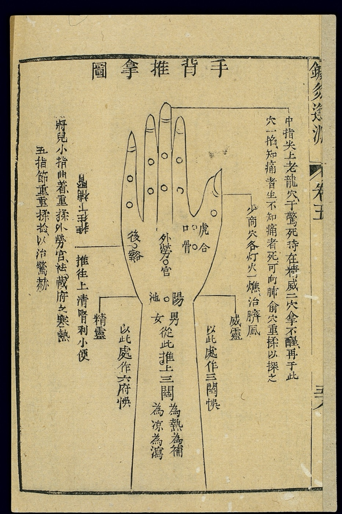
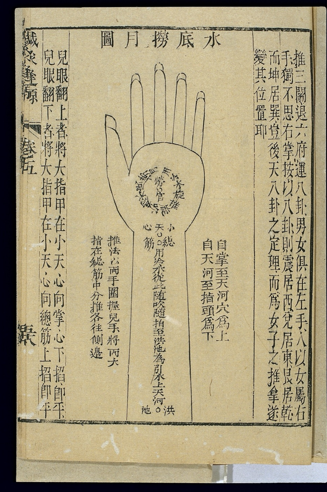

Tuina-Massage am Odeonsplatz
Chinesische Massage bei Frau Li in der Ludwigstraße 11, München. 30 bis 90 Minuten, auch sonntags.
Termin buchen推 tui heißt schieben, 拿 na heißt greifen.
Tuina heißt Schieben  und Greifen
und Greifen  .
.
Frau Li,
15 Jahre TCM
Über mich
Mein Name ist Frau Li, und ich freue mich, Sie in der Praxis am Odeonsplatz zu begrüßen. Für mich ist Tuina mehr als eine Technik, sie ist eine Kunst der Achtsamkeit. Jeder Körper erzählt seine eigene Geschichte, und darauf stimme ich jede Behandlung ab.
Was ist Tuina?
Tuina, auch Anmo genannt, ist eine manuelle Behandlungsform der Traditionellen Chinesischen Medizin. Nach ihrer Lehre soll so der Fluss des Qi entlang der Meridiane angeregt werden. Traditionell wird Tuina eingesetzt
- bei Verspannungen in Nacken, Schultern und Rücken,
- bei Stress und dem Wunsch nach Entspannung,
- als Ausgleich zum Alltag,
- begleitend zu Akupunktur und anderen TCM-Methoden.
Tuina ersetzt keine ärztliche Untersuchung oder Behandlung. Die Wirkung im Sinne der TCM ist wissenschaftlich nicht belegt. Bei akuten Beschwerden sprechen Sie bitte zuerst mit Ihrer Ärztin oder Ihrem Arzt.

Tuina-Tafeln aus einem chinesischen Lehrbuch der Qing-Zeit. Oben steht 推拿圖, „Tuina-Tafel“.
Preise nach Minuten
Jede Behandlung wird individuell abgestimmt. Je länger, desto günstiger die Minute.
Alle Preise inklusive gesetzlicher Mehrwertsteuer.Bezahlung bar oder mit Karte.

Der Odeonsplatz mit Feldherrnhalle und Theatinerkirche. Die Praxis liegt ein paar Schritte weiter in der Ludwigstraße.
Häufige Fragen
Wie buche ich einen Termin?
Online über „Termin buchen“, telefonisch unter 0151 578 346 02 oder per E-Mail an info@tcm-tuina-massage.de. Behandlungen finden nur nach Vereinbarung statt.
Wie kann ich bezahlen?
Direkt in der Praxis, bar oder mit Karte. Alle Preise enthalten die gesetzliche Mehrwertsteuer.
Übernimmt die Krankenkasse die Kosten?
Gesetzliche Krankenkassen übernehmen die Kosten für eine Tuina-Massage in der Regel nicht. Ob eine private Kranken- oder Zusatzversicherung einen Teil erstattet, erfahren Sie direkt bei Ihrer Versicherung.
Wann sollte ich vorher ärztlichen Rat einholen?
Bei Fieber, akuten Entzündungen, frischen Verletzungen, Hauterkrankungen im Behandlungsbereich, in der Schwangerschaft oder bei ernsthaften Vorerkrankungen klären Sie bitte vor dem Termin mit Ihrer Ärztin oder Ihrem Arzt, ob eine Massage für Sie geeignet ist.
Welche Dauer passt zu mir?
30 Minuten eignen sich, wenn Sie sich auf einen Bereich konzentrieren möchten. Mit 60 oder 90 Minuten bleibt Zeit für eine ganzheitliche Behandlung. Am Telefon beraten wir Sie gern.
Zeiten und Anfahrt
Ihr Weg zu uns
U-Bahn U3, U4, U5, U6Haltestelle Odeonsplatz. Auf der linken Straßenseite Richtung Siegestor, je nach Ausgang 80 bis 180 Meter.
Bus 100, MuseumslinieHaltestelle Von-der-Tann-Straße. In Richtung Odeonsplatz hält der Bus direkt am Eingang.
Tram 19Haltestelle Theatinerstraße, dann etwa 500 Meter zu Fuß über Theatinerstraße und Odeonsplatz Richtung Siegestor, linke Straßenseite.
Termine nur nach Vereinbarung.
Termin buchen